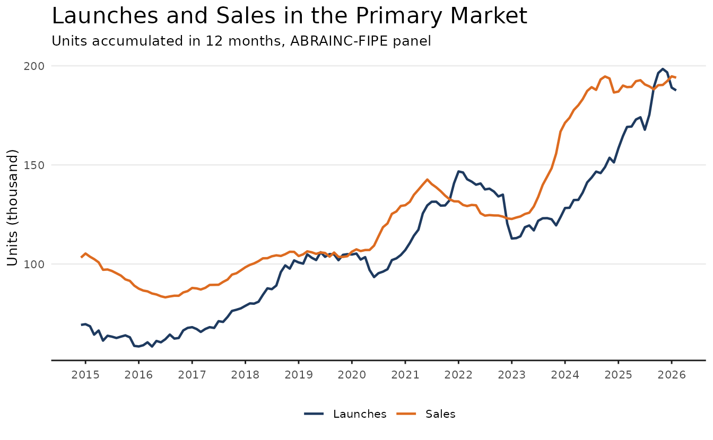
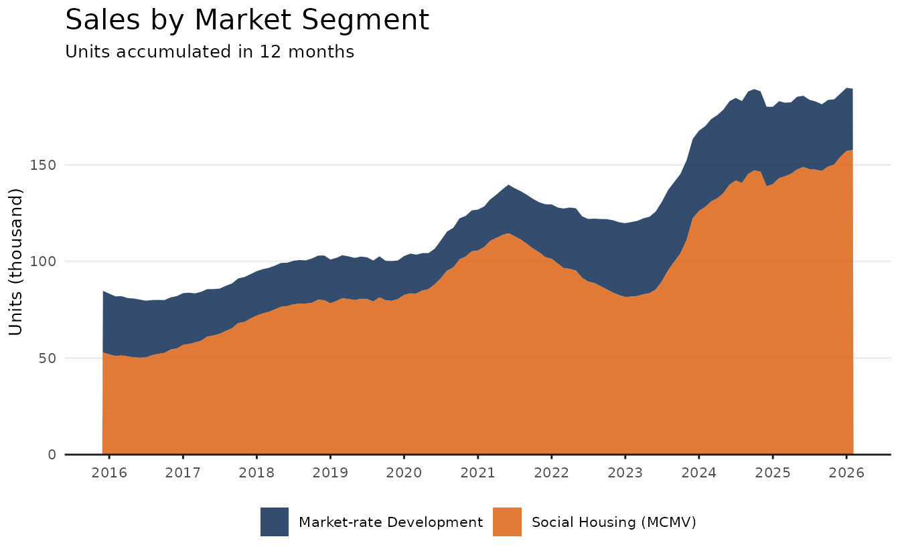
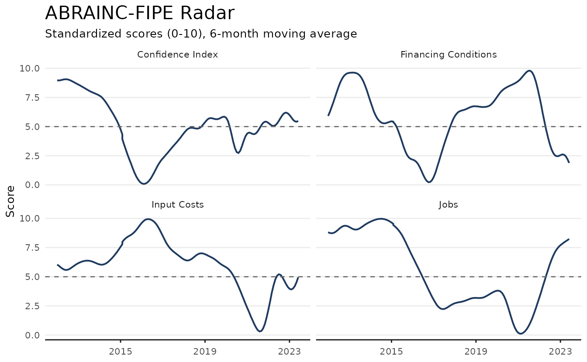
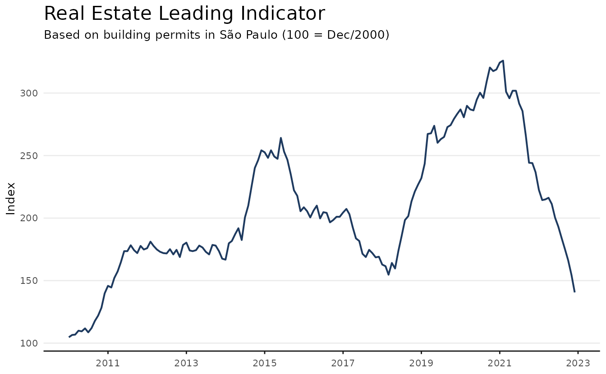
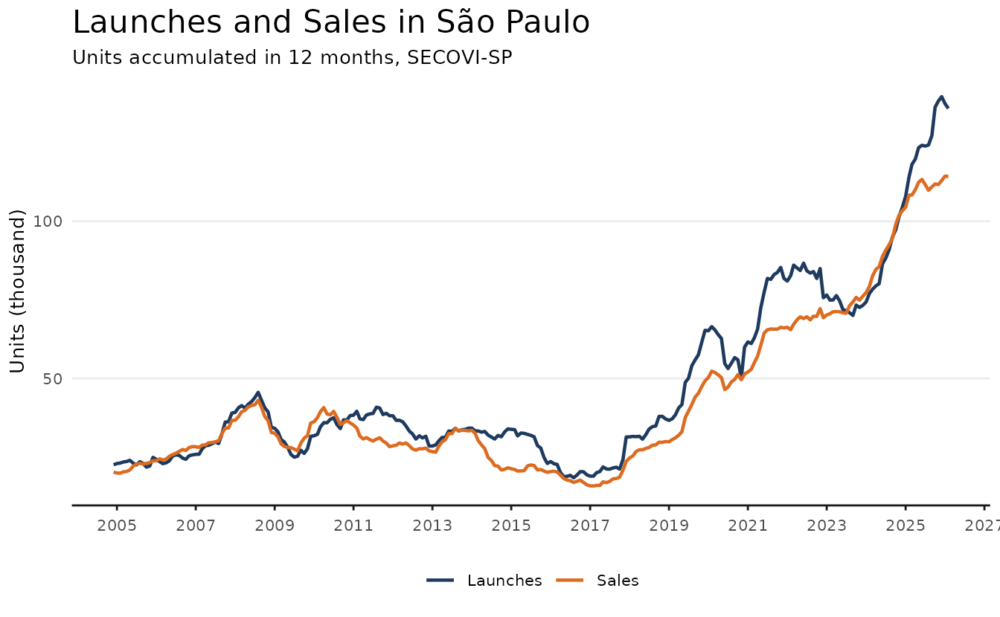
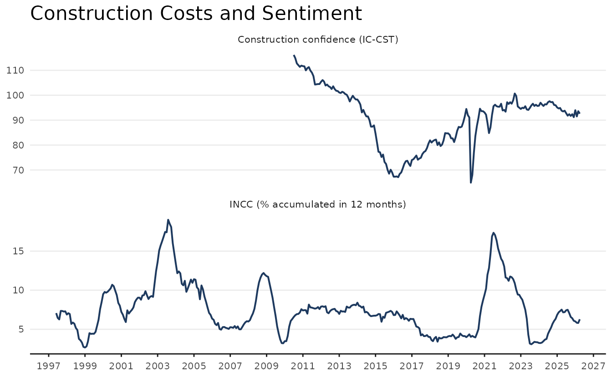

The Primary Market and the Construction Cycle
Source:vignettes/articles/primary-market.Rmd
primary-market.RmdThe primary market covers newly built homes sold by developers. This article tracks the development cycle, from launches to sales and deliveries, and the business environment around it using three datasets
-
abraincfor national primary market indicators from the ABRAINC-FIPE panel of developers, -
secovifor the São Paulo market, -
fgv_ibrefor construction costs and business sentiment.
The code below defines a common theme for the plots in this article. It is entirely optional and can be omitted.
color_palette <- c(
"#1E3A5F",
"#DD6B20",
"#2C7A7B",
"#D69E2E",
"#805AD5",
"#C53030"
)
theme_series <- function() {
theme_minimal(base_size = 10) +
theme(
plot.title = element_text(size = 16),
panel.grid.minor = element_blank(),
panel.grid.major.x = element_blank(),
axis.line.x = element_line(color = "gray10", linewidth = 0.5),
axis.ticks.x = element_line(color = "gray10", linewidth = 0.5),
axis.title.x = element_blank(),
legend.position = "bottom",
palette.color.discrete = color_palette
)
}Launches and sales
The indicator table from abrainc reports
monthly launches, sales, deliveries, cancellations, and supply for a
panel of large developers. The series are volatile month to month, so
the plot below uses values accumulated over twelve months.
abrainc <- get_dataset("abrainc", table = "indicator")
glimpse(abrainc)
#> Rows: 3,504
#> Columns: 6
#> $ date <date> 2014-01-01, 2014-01-01, 2014-01-01, 2014-01-01, 2014-0…
#> $ year <dbl> 2014, 2014, 2014, 2014, 2014, 2014, 2014, 2014, 2014, 2…
#> $ category <chr> "new_units", "new_units", "new_units", "new_units", "so…
#> $ variable <chr> "total", "market_rate", "social_housing", "other", "tot…
#> $ value <dbl> 1726.0000, NA, NA, NA, 4232.0000, NA, NA, NA, 6409.0000…
#> $ variable_label <chr> "Total", "Market-rate Development", "Social Housing (MC…
cycle <- abrainc |>
filter(
category %in% c("new_units", "sold"),
variable == "total"
) |>
mutate(
units_12m = zoo::rollsumr(value, k = 12, fill = NA) / 1e3,
category_label = if_else(category == "new_units", "Launches", "Sales"),
.by = category
)
ggplot(filter(cycle, !is.na(units_12m)), aes(date, units_12m)) +
geom_line(aes(color = category_label), lwd = 0.8) +
scale_color_manual(values = color_palette[c(1, 2)]) +
scale_x_date(date_breaks = "1 year", date_labels = "%Y") +
labs(
title = "Launches and Sales in the Primary Market",
subtitle = "Units accumulated in 12 months, ABRAINC-FIPE panel",
y = "Units (thousand)",
color = NULL
) +
theme_series()
Market segments
The same indicators are split between market-rate developments and social housing (the MCMV program and its successors). Social housing accounts for a large and fairly stable share of total sales.
segments <- abrainc |>
filter(
category == "sold",
variable %in% c("market_rate", "social_housing")
) |>
mutate(
units_12m = zoo::rollsumr(value, k = 12, fill = NA) / 1e3,
.by = variable
)
ggplot(filter(segments, !is.na(units_12m)), aes(date, units_12m)) +
geom_area(aes(fill = variable_label), alpha = 0.9) +
scale_fill_manual(values = color_palette[c(1, 2)]) +
scale_x_date(date_breaks = "1 year", date_labels = "%Y") +
scale_y_continuous(expand = expansion(mult = c(0, 0.05))) +
labs(
title = "Sales by Market Segment",
subtitle = "Units accumulated in 12 months",
y = "Units (thousand)",
fill = NULL
) +
theme_series()
Business conditions
The radar table condenses the business environment into
standardized 0-10 scores across four dimensions, macroeconomy, credit,
demand, and the real estate sector. The plot shows one representative
indicator from each dimension, smoothed with a six-month moving
average.
radar <- get_dataset("abrainc", table = "radar")
radar_sel <- radar |>
filter(
variable %in% c("confidence", "finance_condition", "employment", "input_costs"),
date >= as.Date("2012-01-01")
)
ggplot(radar_sel, aes(date, ma6)) +
geom_line(color = color_palette[1], lwd = 0.7) +
geom_hline(yintercept = 5, linetype = 2, color = "gray40") +
facet_wrap(vars(variable_label)) +
scale_x_date(date_breaks = "4 years", date_labels = "%Y") +
labs(
title = "ABRAINC-FIPE Radar",
subtitle = "Standardized scores (0-10), 6-month moving average",
y = "Score"
) +
theme_series()
A leading indicator
Building permits anticipate construction activity. The
leading table compiles permits in the city of São Paulo
into a leading indicator of real estate activity.
leading <- get_dataset("abrainc", table = "leading")
leading_index <- leading |>
filter(
variable == "leading_index",
zone == "Total",
date >= as.Date("2010-01-01")
)
ggplot(leading_index, aes(date, value)) +
geom_line(color = color_palette[1], lwd = 0.7) +
scale_x_date(date_breaks = "2 years", date_labels = "%Y") +
labs(
title = "Real Estate Leading Indicator",
subtitle = "Based on building permits in São Paulo (100 = Dec/2000)",
y = "Index"
) +
theme_series()
São Paulo in focus
SECOVI-SP, the housing syndicate of São Paulo, reports complementary
indicators for the largest market in the country. The
launch and sale tables track new supply and
sales in the city.
secovi <- get_dataset("secovi")
glimpse(secovi)
#> Rows: 9,608
#> Columns: 5
#> $ date <date> 2006-01-01, 2006-02-01, 2006-03-01, 2006-04-01, 2006-05-01, …
#> $ category <chr> "condo", "condo", "condo", "condo", "condo", "condo", "condo"…
#> $ variable <chr> "default_condominio", "default_condominio", "default_condomin…
#> $ name <chr> "acao_por_falta_de_pagamento", "acao_por_falta_de_pagamento",…
#> $ value <dbl> 1216, 1249, 1699, 1482, 1562, 1511, 1577, 1720, 1376, 1270, 1…
sp_market <- secovi |>
filter(
variable %in% c("launches", "sales"),
name == "unidades"
) |>
mutate(
units_12m = zoo::rollsumr(value, k = 12, fill = NA) / 1e3,
variable_label = if_else(variable == "launches", "Launches", "Sales"),
.by = variable
)
ggplot(filter(sp_market, !is.na(units_12m)), aes(date, units_12m)) +
geom_line(aes(color = variable_label), lwd = 0.8) +
scale_color_manual(values = color_palette[c(1, 2)]) +
scale_x_date(date_breaks = "2 years", date_labels = "%Y") +
labs(
title = "Launches and Sales in São Paulo",
subtitle = "Units accumulated in 12 months, SECOVI-SP",
y = "Units (thousand)",
color = NULL
) +
theme_series()
Construction costs and sentiment
The fgv_ibre dataset gathers FGV indicators for the
construction sector. INCC measures construction costs; the IC-CST index
measures the confidence of construction firms.
fgv <- get_dataset("fgv_ibre")
glimpse(fgv)
#> Rows: 3,118
#> Columns: 7
#> $ date <date> 1996-07-01, 1996-07-01, 1996-07-01, 1996-07-01, 1996-…
#> $ name_simplified <chr> "incc_brasil_di", "incc_brasil_10", "incc_brasil", "in…
#> $ value <dbl> 149.095, 147.979, 149.224, 1.520, 149.445, 149.044, 15…
#> $ name_series <chr> "INCC - Brasil - DI", "INCC - Brasil-10", "INCC - Bras…
#> $ code_series <dbl> 1464783, 1464331, 1465235, 1000370, 1464783, 1464331, …
#> $ unit <chr> "Índice", "Índice", "Índice", "Percentual", "Índice", …
#> $ source <chr> "FGV-INCC", "FGV-INCC", "FGV-INCC", "FGV-INCC", "FGV-I…The plot below combines cost pressure and sentiment. Cost shocks, such as the one in 2021, typically depress confidence with a lag.
incc <- fgv |>
filter(name_simplified == "incc") |>
mutate(
acum12m = (zoo::rollapplyr(
1 + value / 100, width = 12, FUN = prod, fill = NA
) - 1) * 100
)
confidence <- fgv |>
filter(name_simplified == "ic_cst")
fgv_plot <- bind_rows(
list(
"INCC (% accumulated in 12 months)" = select(incc, date, value = acum12m),
"Construction confidence (IC-CST)" = select(confidence, date, value)
),
.id = "series"
)
ggplot(filter(fgv_plot, !is.na(value)), aes(date, value)) +
geom_line(color = color_palette[1], lwd = 0.7) +
facet_wrap(vars(series), ncol = 1, scales = "free_y") +
scale_x_date(date_breaks = "2 years", date_labels = "%Y") +
labs(
title = "Construction Costs and Sentiment",
y = NULL
) +
theme_series()
Learn more
The column-level documentation of each dataset used here is available
in the help topics ?abrainc, ?secovi, and
?fgv_ibre. For housing credit, see the article on housing
credit; for price indices, see
vignette("working-with-rppi").